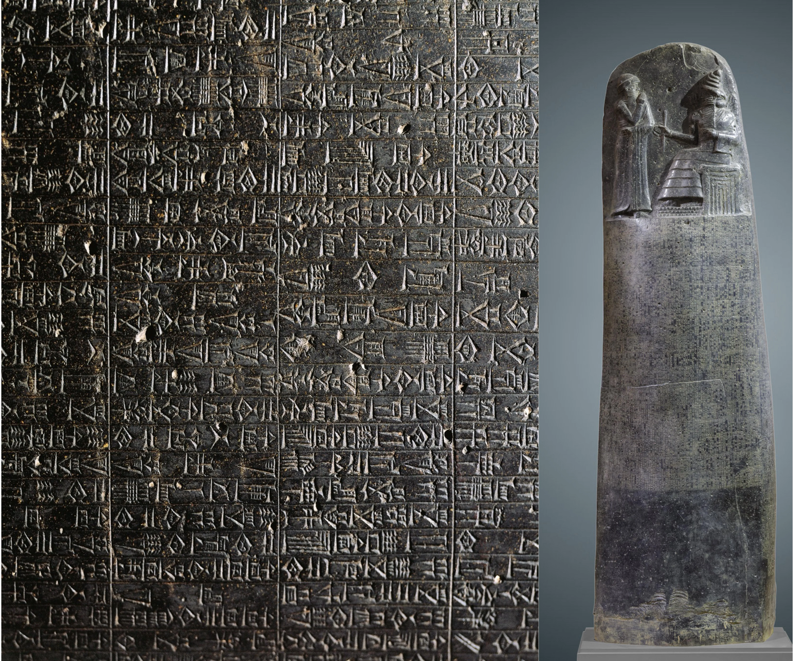

Ancient Law
Introduction to Mesopotamia
Ancient Mesopotamia is often called the “Cradle of Civilization” because it was one of the first regions in the world to develop cities, writing systems, and organized governments. As city-states grew between the Tigris and Euphrates rivers, maintaining order became increasingly important. This led to the creation of the earliest known written legal systems.
The Code of Hammurabi
One of the most famous early law codes was the Code of Hammurabi, created around 1754 BCE in Babylon. It consisted of nearly 300 laws carved onto a large stone pillar. These laws were displayed publicly so that citizens could understand the rules and consequences of breaking them.
The Code of Hammurabi introduced the principle of “an eye for an eye,” meaning punishments were often equal to the offense committed. This system emphasized strict justice and deterrence.
Features of Ancient Law
- Laws were written and publicly displayed
- Punishments were often harsh
- Social status affected punishment severity
- Kings were seen as law-givers
| Feature | Description |
|---|---|
| Written Laws | Laws carved on stone tablets |
| Punishment System | Based on “eye for an eye” principle |
| Social Structure | Different punishments based on class |
| Authority | King as supreme lawgiver |
Justice and Social Status
Although the Code of Hammurabi was an important step toward organized justice, it was not equal for all citizens. Wealthy individuals often received lighter punishments, while common people and slaves faced harsher penalties. This reflects how early legal systems were deeply influenced by social hierarchy.

Despite their harshness, ancient Mesopotamian laws laid the foundation for future legal systems. They introduced the idea that laws should be written, publicly known, and systematically enforced. This marked the beginning of codified law, influencing civilizations for centuries to come.
Go Back Up ↑